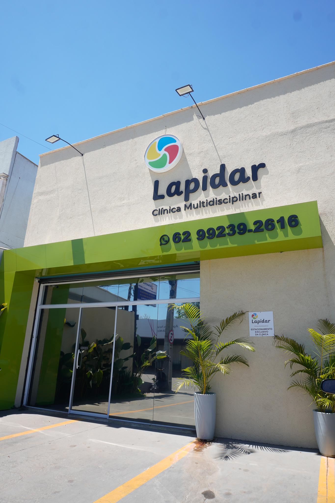

Lapidar Educação · Senador Canedo, GO
Aprenda a aplicar o VB-MAPP na prática
Curso em videoaulas para psicólogos, fonoaudiólogos, fisioterapeutas e terapeutas ocupacionais que atendem crianças autistas. Entenda o que é o protocolo, como ele funciona e como aplicar, com exemplos reais.
- 4 horas de videoaulas
- 1 ano de acesso
- Garantia de 7 dias
Nível 1 0 a 18 meses
Nível 2 18 a 30 meses
Nível 3 30 a 48 meses
Você sabe que o VB-MAPP é importante. Na hora de aplicar, trava.
Se alguma destas frases parece sua, este curso foi feito para você.
- “Já ouvi falar muito do VB-MAPP, mas nunca entendi direito como ele funciona.”
- “Li o manual e, na hora de aplicar, não sabia por onde começar.”
- “Fico em dúvida se estou registrando os marcos do jeito certo.”
- “Sei que é importante, mas não sei explicar por quê.”
Sem segurança na aplicação, fica difícil confiar no resultado da avaliação.
Do que é o VB-MAPP à aplicação, em um só curso
Em 4 horas de videoaulas, a psicóloga Camila Olegario explica o protocolo e mostra como aplicá-lo, com exemplos reais.
Entenda antes de aplicar
Saiba o que o VB-MAPP avalia e por que aplicá-lo é tão importante no atendimento.
Veja a aplicação na prática
Exemplos reais mostram o protocolo em uso, além do que está no manual.
Estude no seu ritmo
Aulas gravadas, com 1 ano de acesso para rever sempre que precisar.
O que você vai aprender
O curso vai do conceito à aplicação.
-
O que é o VB-MAPP
O que é o protocolo e o que ele avalia.
-
Por que aplicar
Por que aplicar o VB-MAPP é tão importante no atendimento.
-
Como o protocolo funciona
Como o VB-MAPP está organizado e como cada parte funciona.
-
Como aplicar na prática
A aplicação do protocolo, com exemplos reais.
- 4 horas de videoaulas gravadas
- 1 ano de acesso
- 7 dias de garantia
Para quem é. E para quem não é.
É para você se
- É psicólogo, fonoaudiólogo, fisioterapeuta ou terapeuta ocupacional e atende crianças autistas.
- Quer entender o VB-MAPP antes de aplicar pela primeira vez.
- Já aplica, mas quer mais segurança em cada etapa.
- Prefere ver a aplicação na prática, com exemplos reais.
Não é para você se
- Procura o protocolo em si. O curso não inclui o manual nem as folhas de registro do VB-MAPP.
- Busca uma formação completa em ABA. O foco aqui é o VB-MAPP.
- Quer aplicar o protocolo sem estudar o manual.
Quem está por trás do curso
Camila Carvalho Olegario
Psicóloga e Neuropsicóloga, especialista em Análise Comportamental Aplicada (ABA) CRP 09/19734
Tem 5 anos de experiência na aplicação do VB-MAPP em paciente com transtorno do espectro autista (TEA), ela explica o VB-MAPP e mostra como aplicá-lo, com exemplos reais.
Lapidar Educação
É a frente de cursos da Lapidar Clínica Multidisciplinar. Aqui, compartilhamos com outros profissionais o que aplicamos no dia a dia da clínica. O primeiro curso é sobre o VB-MAPP.

Um curso que nasce da prática clínica
A Lapidar Clínica Multidisciplinar atende crianças e adolescentes em Senador Canedo, Goiás, há mais de 1 ano. O que você aprende no curso é o que a equipe aplica todos os dias com os pacientes.
- Terapia ABA, avaliação neuropsicológica, psicologia infantil, fonoaudiologia e terapia ocupacional no mesmo lugar.
- Atendimento a crianças com autismo (TEA), TDAH, TOD e outras condições do neurodesenvolvimento.
- Intervenções baseadas em evidências científicas.
Rua Monteiro Lobato, Qd. 43, Lt. 32, Jardim Canedo I, Senador Canedo (GO)
O que dizem os alunos
Mensagens recebidas de quem fez o curso.
Seu acesso ao curso VB-MAPP na prática
Assista quando quiser, pelo tempo de 1 ano.
Curso VB-MAPP
- 4 horas de videoaulas gravadas
- O que é o VB-MAPP e por que aplicar
- Como o protocolo funciona
- Aplicação na prática, com exemplos reais
- 1 ano de acesso
R$ 49,90
Garantir meu acessoGarantia de 7 dias. Se não gostar, peça o reembolso em até 7 dias após a compra e receba todo o valor de volta.
Perguntas frequentes
O curso inclui o protocolo VB-MAPP?
Não. O curso explica o que é o protocolo, como ele funciona e como aplicar. O manual e as folhas de registro do VB-MAPP são vendidos separadamente.
Preciso já ter aplicado o VB-MAPP?
Não. O curso começa explicando o que é o protocolo e como ele funciona, antes de chegar à aplicação.
Para quais profissionais o curso é indicado?
Para psicólogos, fonoaudiólogos, fisioterapeutas e terapeutas ocupacionais que atendem crianças autistas.
As aulas são ao vivo?
Não. São videoaulas gravadas, com 4 horas no total. Você assiste quando quiser.
Por quanto tempo tenho acesso?
Por 1 ano a partir da compra.
Como recebo o acesso?
Depois que o pagamento é confirmado, você recebe por e-mail as instruções de acesso ao curso na Kiwify.
Quem dá as aulas?
Camila Olegario, psicóloga especialista em Análise Comportamental Aplicada (ABA), com 3 anos de experiência.
O que é a Lapidar Educação?
É a frente de cursos da Lapidar Clínica Multidisciplinar, de Senador Canedo (GO), que há mais de 1 ano atende crianças e adolescentes. Nos cursos, a equipe compartilha o que aplica na prática clínica.
E se eu não gostar?
Você tem 7 dias de garantia. Peça o reembolso pela Kiwify dentro desse prazo e receba todo o valor de volta.
O VB-MAPP fica mais claro quando alguém mostra na prática.
4 horas de videoaulas, 1 ano de acesso e 7 dias de garantia, por R$ 49,90.
Garantir meu acesso